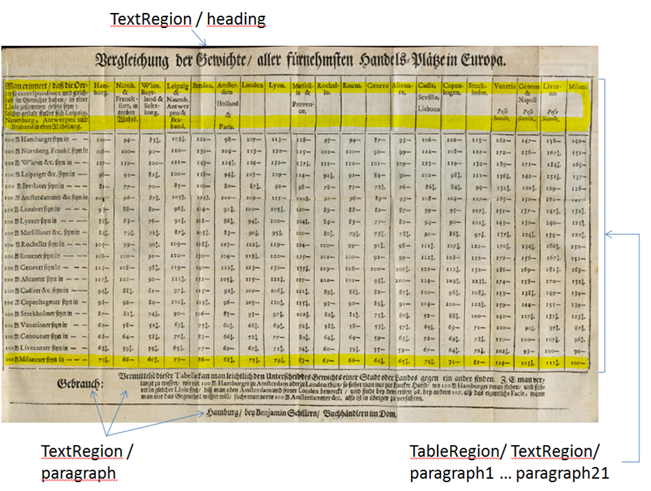
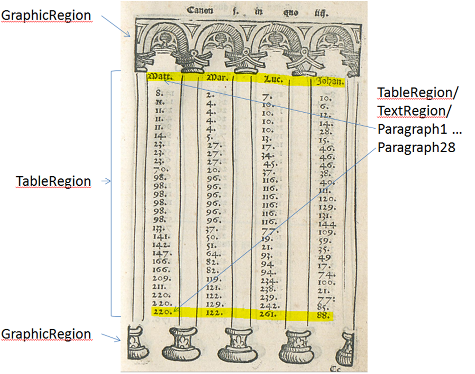
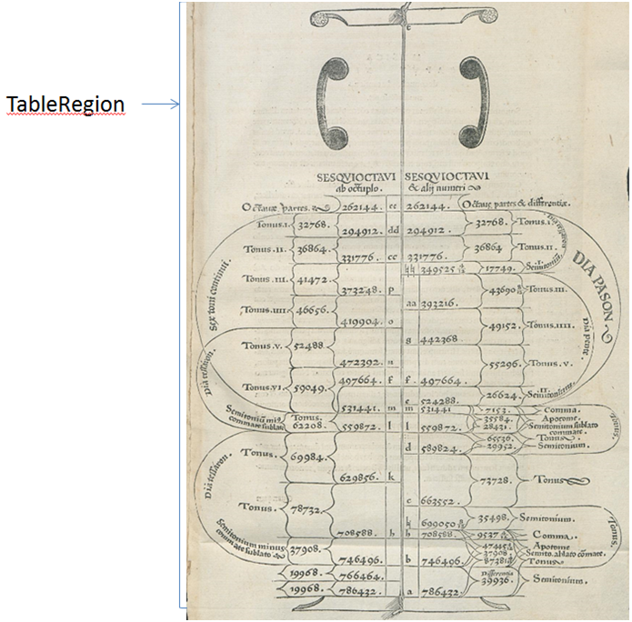

Tabellen (TableRegion)
Tabellen sind graphisch strukturierte Informationen, die in Spalten und Zeilen angeordnet wurden. Diese Anordnung kann durch Linien gekennzeichnet sein, jedoch ganz häufig fehlen diese Linien. In diesen Fällen wird die Trennung der Inhalte durch spezielle Tabs und Abstände kenntlich gemacht. Darüber hinaus gibt es viele Spielarten von Tabellen, die hier nicht beschrieben werden können.
Wesentlich ist zunächst die Auszeichnung all dieser Zahlen oder Text enthaltenden Regionen als TableRegion. In Fällen einfach strukturierter Tabellen (wie eingangs beschrieben) sind folgende Informationen für die Tabelle zu erfassen (Anzahl Spalten, Anzahl Zeilen). Die Zelleninhalte selbst sind zeilenweise als TextRegion/paragraph durch Tabs getrennt zu erfassen.
Inhalte unübersichtlicher Tabellen, die sich dem einfachen Schema entziehen, werden nicht erfasst. In diesen Fällen wird lediglich die TableRegion gekennzeichnet.
Attribute pc:TableRegionType /@columns
Attribute pc:TableRegionType /@rows


